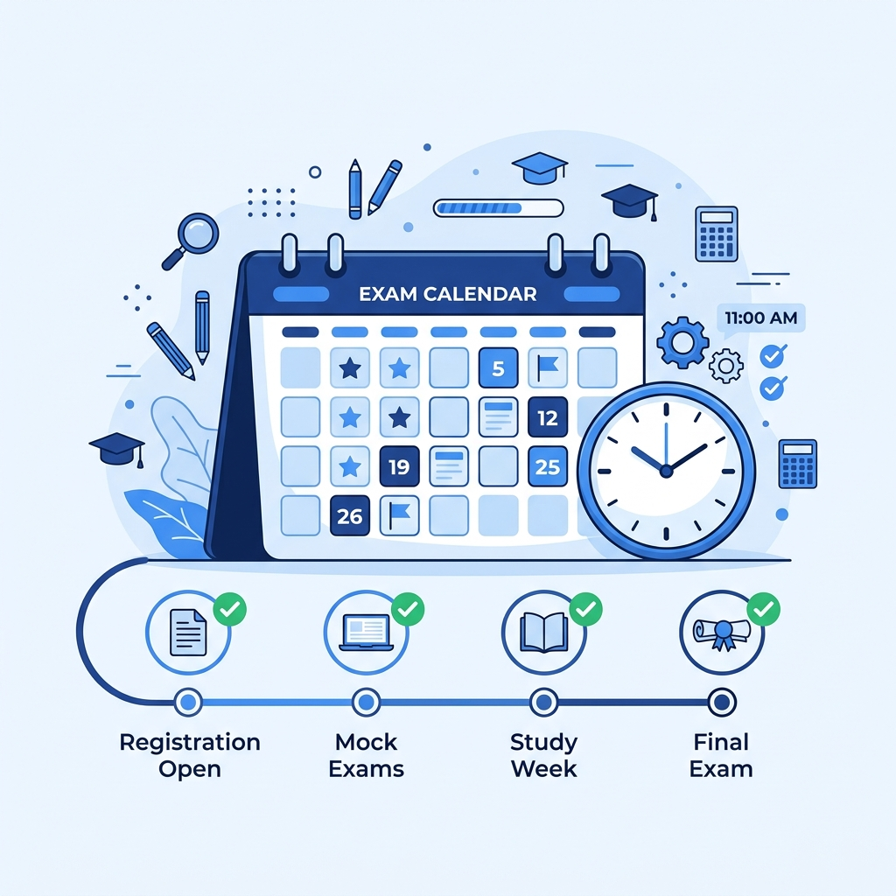

Stay updated with all important UPSC Civil Services Examination events including notification release, application dates, preliminary examination, mains examination, personality test, and final result announcements.

Stay consistent with your preparation. Every day counts towards your success.
February 2026
February - March 2026
June 2026
September 2026
Follow the complete Civil Services Examination schedule from notification release to the final selection process.
UPSC releases the official Civil Services Examination notification along with the detailed advertisement.
Eligible candidates can submit their applications through the official UPSC online portal.
Download the Preliminary Examination admit card before the examination date.
Candidates appear for General Studies Paper I and CSAT Paper II.
Qualified candidates write descriptive papers for the Civil Services Main Examination.
Candidates shortlisted after the Main Examination attend the Personality Test (Interview).
UPSC publishes the final merit list based on Mains examination and Interview performance.
Keep track of every important milestone in the UPSC Civil Services Examination.
Complete these important tasks before appearing for the UPSC Civil Services Examination.
These reminder options will become functional after backend integration.
Download or print the examination schedule for quick reference.
The UPSC generally releases the Civil Services Examination notification during February every year.
Yes. Candidates should always verify the latest schedule from the official UPSC notification.
Admit cards are usually available a few weeks before the Preliminary Examination.
Currently this page contains static data. After integrating Supabase, all dates will be updated dynamically.